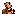

Icônes transparentes
Même cadrage pour toutes les tailles : limites de l’alpha non nul, centrage sur un carré transparent et marge de 8 %. Observer les cheveux gris, les lunettes et l’accent bordeaux du livre.
Sur fond clair

16 × 16 px32 × 32 px48 × 48 px64 × 64 px128 × 128 px192 × 192 px256 × 256 px512 × 512 pxSur fond sombre
16 × 16 px32 × 32 px48 × 48 px64 × 64 px128 × 128 px192 × 192 px256 × 256 px512 × 512 px
Contrôle 32 px
Taille réelle : 32 × 32 pxZoom ×8 sur fond clairZoom ×8 sur fond sombre
Couvertures
Partage et bandeau
Carte de partage — 1200 × 630 pxBandeau — 960 × 504 px